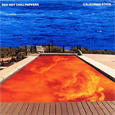

RADIO
NOTICIAS
Radiomacondo.fm
Prensa y Radio Independiente

Mad Rabbit Studios
© Todos los derechos reservados - Radiomacondo.fm
play
pause
stop
Actualizaci?n requerida
Para escuchar la radio con este player, tienes que actualizar tu browser o tu
Flash plugin
.
RADIO
NOTICIAS
noticias